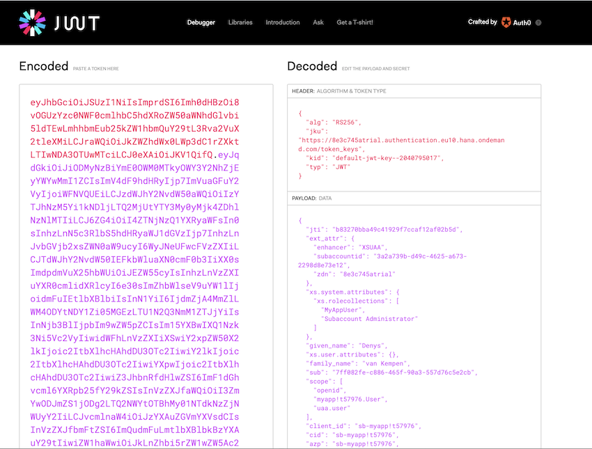
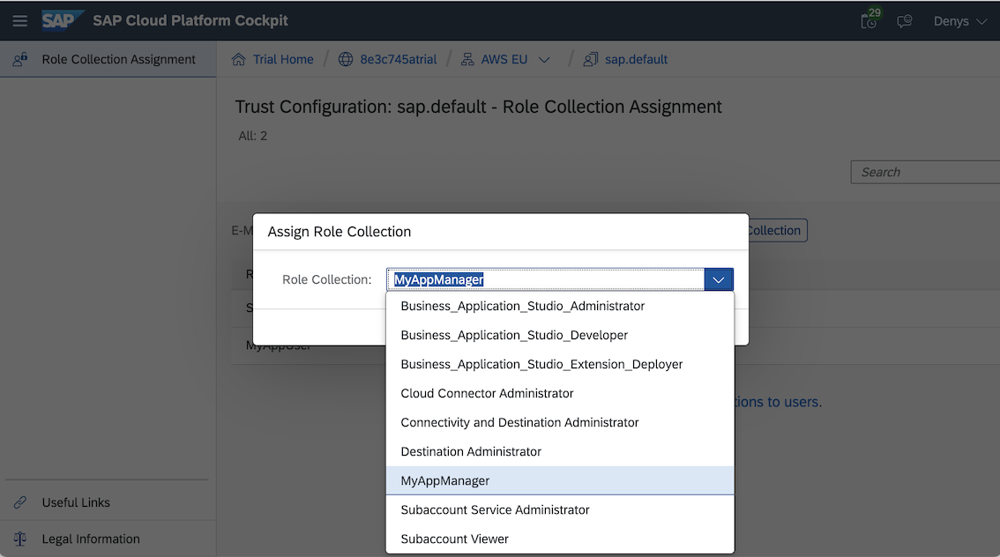

Code: app.get('/srv/authinfo', function (req, res) {res.status(200).json(req.authInfo);});
Decode the JTW
* Tip: Use the JSON Viewer Chrome extension to format the output.

Code: var isAuthorized = req.authInfo.checkScope('$XSAPPNAME.User');
Verify granted scopes:
Business logic returns "Forbidden" when no scope not found.
Grant roles Trial Home > TRAIL_ACCOUNT > PROVIDER/REGION > Security: Trust Configuration > sap.default > Assign Role Collection.
